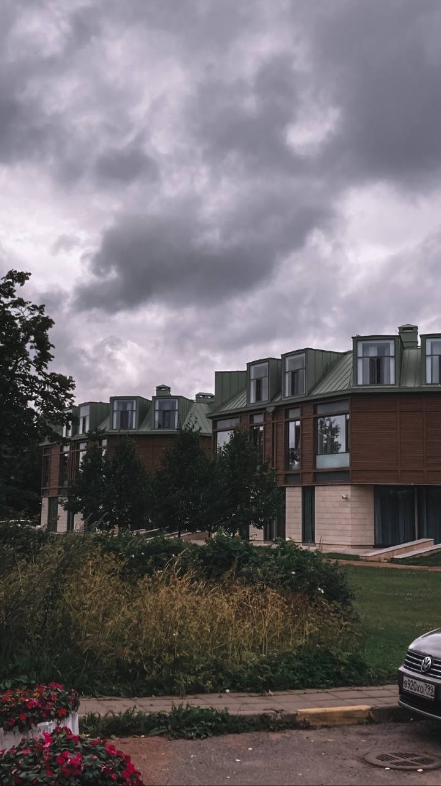
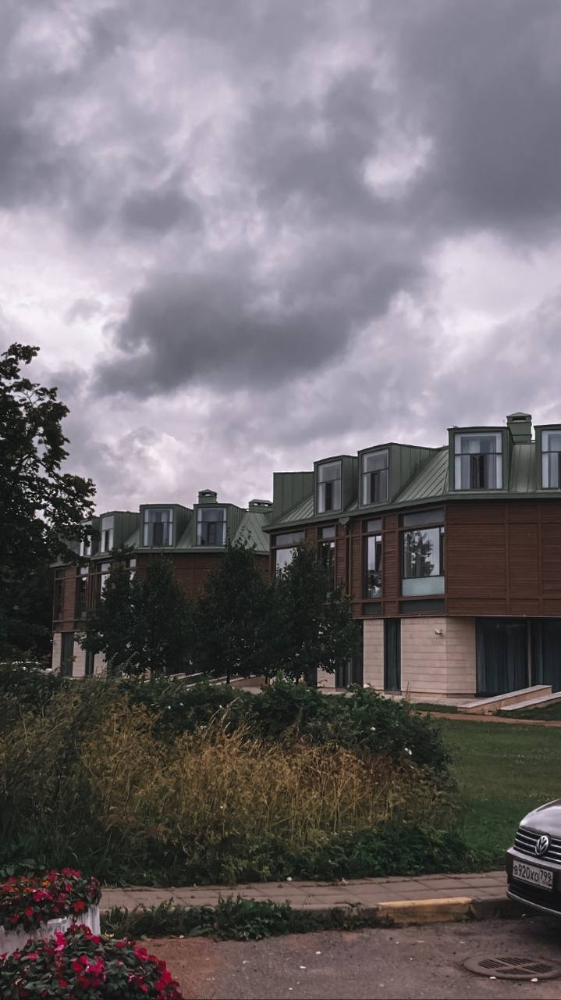

Обо мне
Меня зовут Валерия, я начинающий Frontend-разработчик.
Я родилась и выросла в прекрасной республике Карелии. До 17 лет жила и училась там, а в 10 классе поступила в Финляндию, где проучилась два года. Получив диплом, я вернулась в родной город и несколько лет проработала там менеджером по работе с клиентами, но недавно поняла, что пора что-то менять, и переехала в Санкт-Петербург. На протяжении четырёх лет я я мечтала попасть в сферу IT, но никак не могла решиться. Мои друзья, которые уже являются IT-специалистами, очень меня замотивировали, и я решилась! Сейчас я обучаюсь на профессию Frontend-разработчика с помощью образовательной платформы SkillFactory, а это мой первый сайт, который я буду улучшать и применять к нему новые знания на протяжении всего обучения!
Хобби
С 11 лет я обучалась в художественной школе, закончила её в 2016 году. Также обучалась игре на гитаре, ходила на танцы. Я в восторге от старых фильмов и сериалов, могу бесконечно пересматривать "Красотку", а из книг предпочитаю зарубежную классику.
Мне нравится фотография, вот некоторые мои работы:
 
